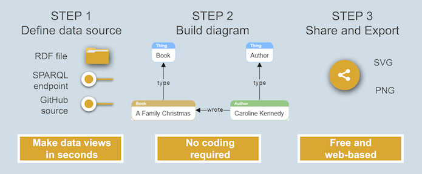

Guest post: How to visualise linked open data
Open data’s potential increases when datasets are linked, and transforming linked datasets into visualisations can extend positive impacts even more. ODI St Petersburg share how they built a tool to allow anyone to visualise linked, open data
By Dmitry Pavlov
What is linked open data and why is it important?
Many now understand what open data is and the benefits it can bring, but what can linked open data offer on top of that?
In his '5 stars of open data', Tim Berners-Lee recommends each data item has a URI identifier so anyone can refer to it and datasets can be linked to each other. This lays the foundation for the web of transparent and interlinked data – think of it as an enormous graph of interconnected concepts, data and documents.
Linked open data helps release information from enclosed documents – such as Office Suite documents generated in Word or Excel, or from PDFs – and exposes it to countless people and machines and helps extend knowledge and insights around the world.
Bringing linked open data to life
In software development, reviewing and negotiating data structures and data itself in diagrams has become a part of systems design, since visual representation is easier to grasp and share. Two years ago, ISST Lab and Vismart Ltd together were engaged in a project with a goal to create a ‘domain meta-model’ to bring together all information systems of a very large fashion department store in St Petersburg, Russia. The idea was that this meta-model could become a unified terminology and master data for all enterprise subsystems speaking different languages: accounting, sales, purchases, online and offline stores. As we moved on with the task we realised that we had no problems finding software for creating models but could not come up with solution to show it to non-programming stakeholders.
While tools for handling linked open data do exist, they are usually either massive, costly products overloaded with features and tailored for software developers or PhD research project prototypes that are not always very reliable. The most acknowledged product for editing linked open data is Protege, developed by Stanford University, which is distributed under an open source licence. While Protege is famous for its support of complex data models development and sophisticated plugin structure bundled with various inference engines, its visualisation capabilities are somewhat limited, and as an offline installable package it does not allow for online sharing and collaboration. The other solution is TopBraid Composer by TopQuadrant, a powerful suite with quite rich visualisation features, but its price of several thousand dollars could be barrier for many people. So it was a need for an effective and affordable solution that inspired us to embark on writing our own software to do the job.
We at ISST lab of ITMO University, in partnership with VISmart Ltd, launched OntoDia to allow anyone to see and explore their open data in a graph form. The tool accepts all major linked open data formats and can hook up to online repo files as well.
Three easy steps to seeing and exploring linked open datasets

1) Choose your datasets
OntoDia allows you select from published open linked datasets by defining a SPARQL endpoint, which is a released gateway for processing queries in SPARQL query language. This allows means you can browse and explore someone else’s data and make diagrams based on it. The other way of configuring data source is to upload your own file in RDF data (RDF is a W3C standard for linked open data). (We set the file size limit to under 2 MB, because larger files are costly to process and store, and we wanted to keep our service free of charge.)
Users can also connect their WebProtege projects (an online tool for building high-level data models and ontologies) to visualise their contents or set up a GitHub file as a data source.
2) Build your diagram
Having defined the datasets you want to visualise, you can then build your own data view by dragging and dropping data nodes from the stack panel to canvas. With the help of the filter icon beside each graph node, you can filter data directly related to selected nodes and choose what to place on the canvas, therefore incrementally exploring the data set.
3) Share your dataviz
Once you are happy with your visualisation, you can share it with others – in the same way you would on Google drive or similar cloud services – or download your diagram as a vector or bitmap image.
What’s next?
The more free, web-based dataviz tools that are accessible for non-coders, the more beneficial impacts that data can bring. There is growing demand among analysts and knowledge engineers for software that allows them to sketch simple diagrams and reorganise business processes by tweaking graphs. There is also a well-expressed need within the private and public sectors for a convenient environment to simplify linked open data modification, processing and publishing as well as for open data to be incorporated into private knowledge bases and open data reuse. We are building Ontodia to meet this need.
We want to hear your thoughts
We would be happy to receive feedback from users on Ontodia, from feature requests and bug reports to strategic advice and co-development.
Keep an eye on the project's latest developments at www.ontodia.org, and get in touch with project spokesman Dmitry Pavlov on LinkedIn.
Dmitry Pavlov is a lecturer and tutor at ITMO University.
If you have ideas or experience in open data that you'd like to share, pitch us a blog or tweet us at @ODIHQ.